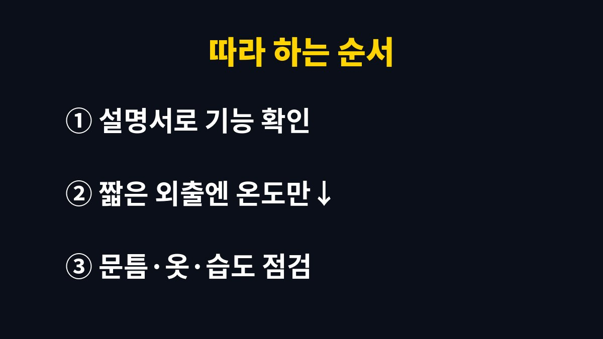

이 글은 보일러를 아껴 틀어도 난방비 고지서가 걱정되는 집을 위해 쓴 글이다.
2026년 11월 기준 지자체와 공공기관이 안내하는 난방 절약 방법과 우리 집에서 직접 바꿔 본 보일러 사용 습관을 함께 정리했다.
나는 오랫동안 외출모드만 누르면 절약이 된다고 믿었는데, 집 상황에 맞게 쓰는 기준이 따로 있었다.
쇼핑몰 주문을 정리하느라 집에서 일하는 날이 많아 겨울에는 보일러가 거의 하루 종일 돌아간다.
아이 둘이 바닥에서 노는 시간이 길어 바닥을 차갑게 둘 수도 없었다.
그래서 나름대로 온도를 낮추고 자주 껐다 켰는데도 고지서 금액은 크게 달라지지 않았다.
그때부터 아끼는 방법 자체가 틀렸을 수도 있다는 생각이 들었다.
집이 완전히 식은 뒤 보일러를 다시 켜면 차가워진 바닥과 배관을 처음부터 데워야 한다.
이 과정에서 보일러가 오래 강하게 돌아가는 것을 소리로도 느낄 수 있었다.
여러 지자체 카드뉴스와 언론 보도에서도 짧은 외출 때는 보일러를 끄기보다 온도를 조금 낮춰 두는 편을 권한다.
나는 이 차이를 알고 나서 보일러 버튼을 누르는 기준을 다시 세웠다.
지자체와 공공기관의 난방비 절약 안내를 보면 공통으로 나오는 내용이 몇 가지 있다.
실내 온도를 적정하게 유지하고, 외출 시간에 맞춰 보일러 모드를 고르고, 창문과 문틈으로 새는 열을 막으라는 것이다.
여기에 가습기로 습도를 맞추고 내복이나 수면양말처럼 옷으로 보온하라는 안내도 자주 보인다.
지역난방을 쓰는 집은 오랫동안 집을 비우더라도 난방을 완전히 끄지 말라는 안내가 언론 보도로 소개되었다.
배관이 얼면 수리 부담이 더 커질 수 있기 때문이다.
우리 집은 도시가스 개별난방이라 아래 표처럼 우리 상황에 맞게 정리해 두었다.
| 상황 | 공공기관 안내 요지 | 우리 집에서 한 일 |
|---|---|---|
| 짧은 외출 | 끄지 말고 온도만 낮추기 | 희망 온도만 한 단계 낮춤 |
| 며칠 비울 때 | 외출모드로 동파 예방 | 명절 귀성 때만 외출모드 |
| 열 손실 | 문풍지·단열 필름 활용 | 현관과 베란다 창에 문풍지 |
| 체감 온도 | 가습기·내복 활용 | 아이들 실내복을 두 겹으로 |
예전에는 잠깐 나갈 때도 습관처럼 외출모드를 눌렀다.
외출모드는 집이 얼지 않을 정도로만 최소한의 난방을 하는 기능이라 돌아와서 다시 데우는 데 시간이 걸렸다.
지금은 장보기나 아이 등원처럼 짧은 외출에는 희망 온도만 조금 낮추고, 하룻밤 이상 비울 때만 외출모드를 쓴다.
이렇게 바꾼 뒤로 귀가 후 집이 데워질 때까지 기다리는 시간이 줄었다.
보일러 설정만큼 효과를 본 것이 현관과 베란다 쪽 문틈을 막은 일이다.
문풍지를 붙이고 창문에 단열 필름을 붙이니 거실 창가에서 느껴지던 찬 바람이 덜했다.
커튼도 바닥까지 닿는 두꺼운 것으로 바꿔 밤에는 꼭 쳐 둔다.
열이 덜 새니 같은 온도로 맞춰도 집이 더 오래 따뜻했다.
아이들에게는 얇은 옷 한 벌 대신 실내복을 두 겹으로 입히고 수면양말을 신긴다.
건조한 날에는 가습기를 켜 두는데, 습도가 적당하면 같은 온도에서도 덜 춥게 느껴졌다.
다만 가습기를 오래 켜 두면 창가에 결로가 생길 수 있어 아침에 짧게 환기한다.
보일러 온도를 올리기 전에 옷과 습도부터 확인하는 것이 우리 집 순서가 되었다.

처음에는 귀찮게 느껴졌지만 한 주만 지나니 몸에 붙었다.
아이들도 수면양말을 스스로 챙겨 신게 되었다.
보일러 버튼을 누르는 횟수가 줄어든 것만으로도 마음이 한결 편했다.
난방비는 무작정 참는다고 줄어드는 비용이 아니었다.
우리 집 구조와 외출 패턴에 맞는 기준을 정하니 춥게 지내지 않으면서도 불필요하게 돌아가는 시간을 줄일 수 있었다.
보일러 모델마다 기능 이름과 작동 방식이 다르니 설명서를 꼭 함께 확인하길 바란다.
다음 글에서는 겨울철 이불을 집에서 세탁하고 보송하게 말리는 방법을 정리할 예정이다.
※ 2026년 기준 공공기관 안내와 개인 경험을 바탕으로 정리한 글이며, 집 구조와 제품에 따라 결과가 다를 수 있어 제품 설명서를 함께 확인하길 바란다.